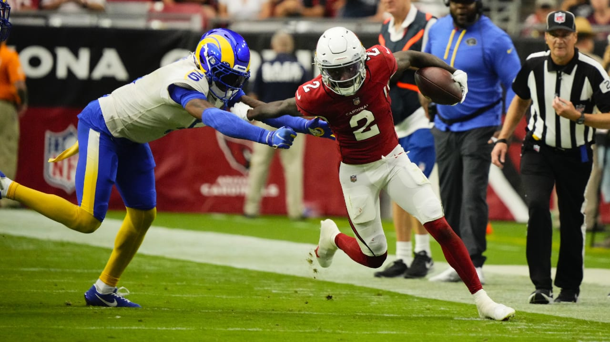
It was a very low-scoring, weird week, where the other Herbert and recently dropped Devonta Smith were the stars (oops, my bad on the drop). But wins are wins, so congrats to anyone who got the W, no matter how ugly it was.
Matchup of the Week: Can you Diggs it? (2-1) vs. Wheelin & Thielen - Tony’s top in points and Chris is coming in off of two straight wins. Can CJ pull off the upset and leap into a playoff spot (it’s never too early to think about playoffs)?
Waiver Wire Wizard: Wild week out there, gotta go with David Njoku $17, no other bids. Neil sold off Kelce and went all-in on replacing him. I love the strategy, and it’s funny he could have saved some money.
Week Four Power Rankings
1. Sweet Brotha Numpsay (3-0)
The win keeps Pangy on top for another week. St. Brown has been his most consistent receiver (obviously), so we hope to see him back soon. The other WRs on the team have talent but seem risky week to week.
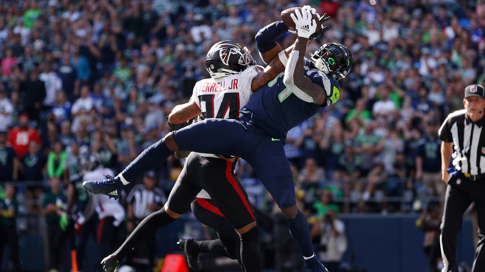
2. Can you Diggs It? (2-1)
Top scoring week, top WR, top TE, and a hell of a call with Cooper to stay 2-1. You don’t want to play this team, and the record is the only thing keeping Tony from the top spot.
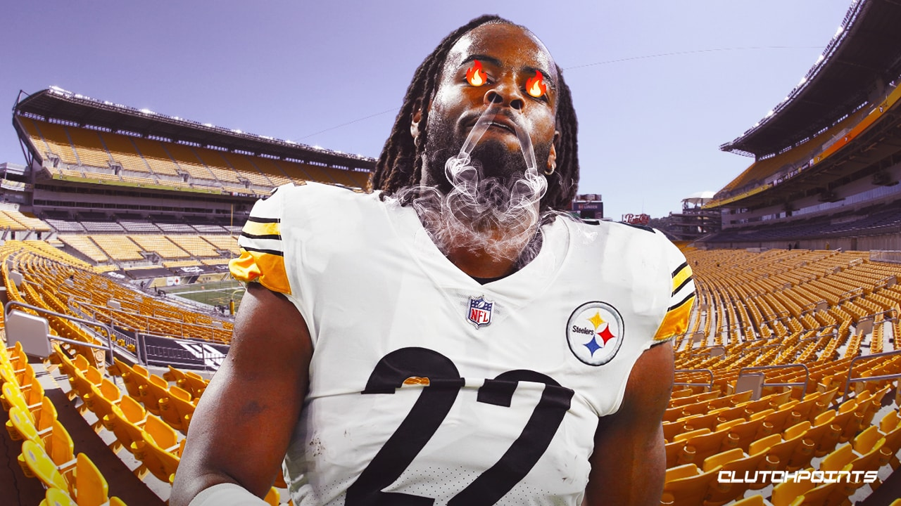
3. One Snake One Kupp (2-1) ⬆️
Chalk with the standings so far, but wins matter (yeah, I already said that). Three top five running backs, and Pollard and Etienne, who I still believe in, are on deck. I am a little nervous about Swift’s health obviously, I need him healthy to stay in the mix all year.
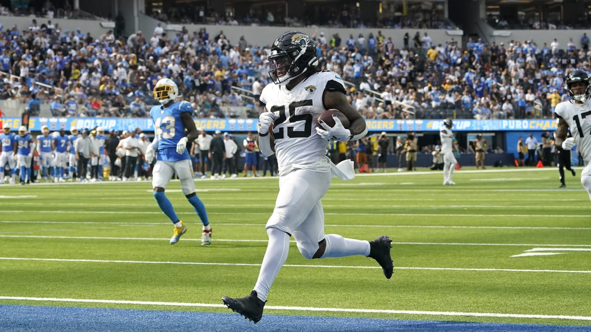
4. The Hurts Locker (1-2)
Hurts so good, baby. But losing doesn’t. I like Joel’s roster quite a bit, and everything Hurts starts cooking in the first half of a 10:00 am game, I think Joel’s got it sewn up. Maybe I’m just an idiot as he slides to 1-2.
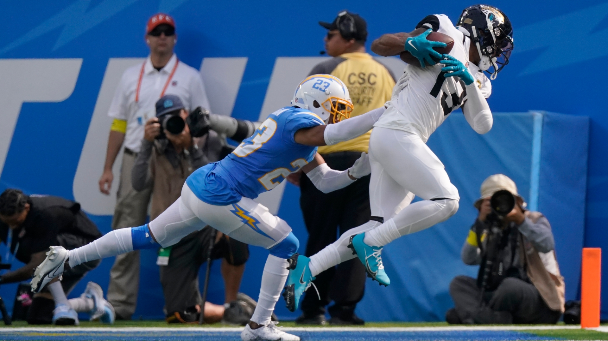
5. Wheelin & Thielen (2-1) ⬆️
Chris boasts the second longest winning streak in the league at two! He’s won those games with a Dominic Torreto mentality, barely doing so, but… theme of the day, they are wins! The downside, no one on this team has been consistent at all, even JT has only one game over expectation.
6. Show me the Mooney (1-2) ⬇️
This man has already released his name-piece player and probably won’t read this anyway because he’s old and ~~can’t read~~ work apps. Despite being one of the highest scoring teams, and boasting a WR combo of Adams, Chase and Waddle, Matt drops his second straight. Time to trust Breece Hall?
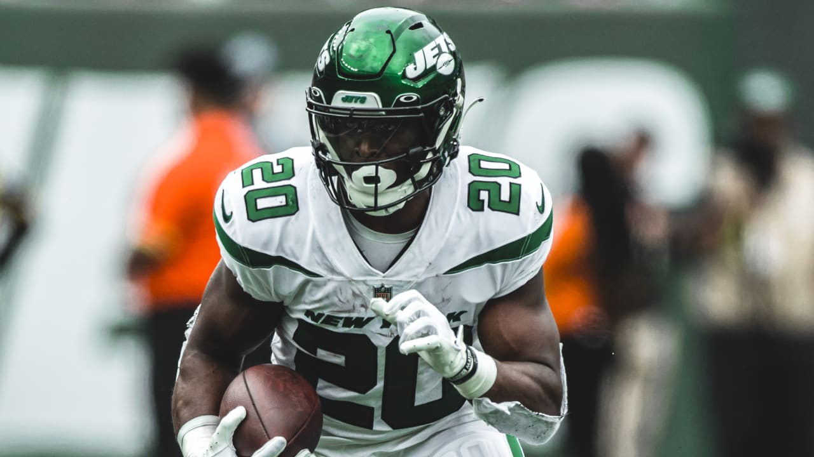
7. Unpaid Bills (1-2) ⬇️
Sitting in the bottom three this week meant taking stabs on the market. I thought the trade between Andy and Neil was pretty fair, and loved Neil’s attempt to salvage TE with a potential breakout candidate - although I feel like Njoku has been a potential breakout for years, he is a specimen.
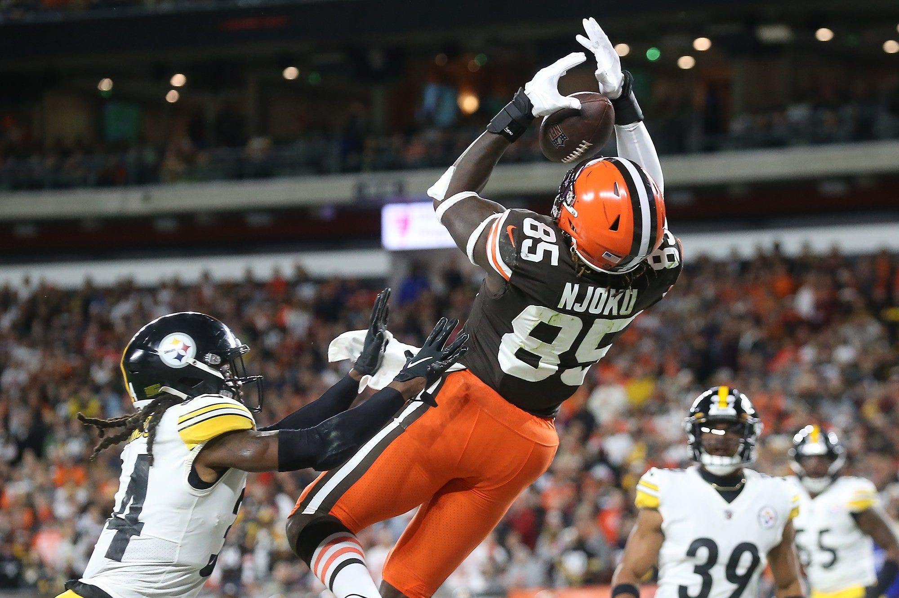
8. Jus-Jonzin-4-Herb (2-1) ⬇️
Good to see Herbert return to practice today! I thought I’d start with a nice note before telling us all what we already know - Andy is an idiot and that was one of the worst weeks ever (62.68pts so we can keep this in the record lol)! Thanks for making sure it was when we played! Oh, but Andy comes out of the week with Kelce, which makes everything so much easier.
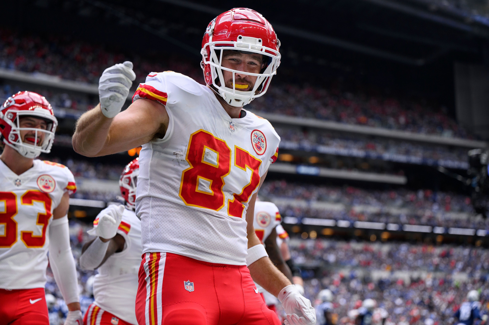
9. 8=D (1-2)
PJ and Kris trade away half their roster and I think PJ gets the better side of it, moving off of a struggling and banged-up Cook, who might be just healthy enough to start but be shitty. It also doesn’t seem like it’s too far off for Dak’s return and a boost for CeeDee who just put up his best performance.
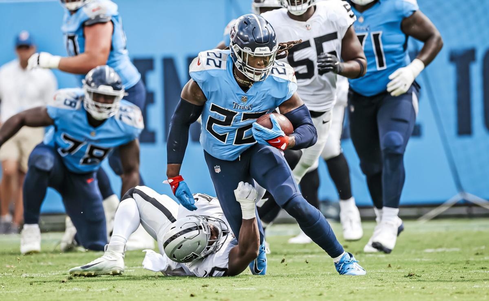
💩 Hollywood Browns (0-3)
Wow, this guy is trying! Kris has a completely new roster this week, but the outlook remains the same. Coming in with a projected 100, keep those trades going and prove us wrong. The shining spot has been Kris’ keeper, Marquise Brown, who has flourished with Murray - did you know they were college teammates? 😮
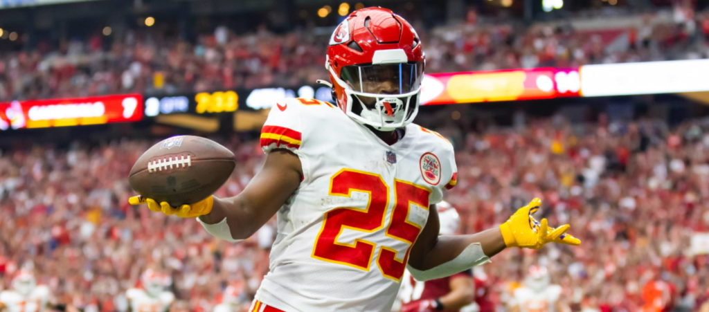
Good luck this week everyone besides Kris. Stay sexy! - 🐍
You can learn a line from a win and a book from a loss. - Paul Brown
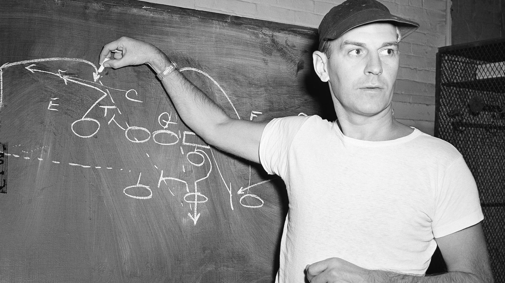